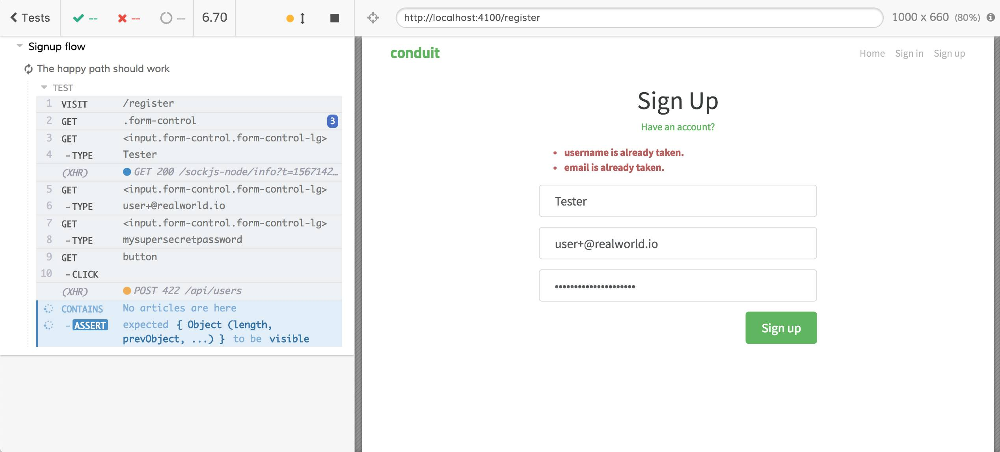

Main E2E test defects
Determinism
Come back to the very first signup E2E test
context("Signup flow", () => {
it("The happy path should work", () => {
cy.visit("/register");
cy.get(".form-control").then($els => {
cy.get($els[0]).type("Tester");
cy.get($els[1]).type("user@realworld.io");
cy.get($els[2]).type("mysupersecretpassword");
});
cy.get("button").click();
cy.contains("No articles are here").should("be.visible");
});
});
This test has a lot of problems, first of all: it's not deterministic (its behavior is not the same every time we launch it). This limitation is obvious, even if the RealWorld database starts pristine, the test is going to succeed only once. The second time, the user will be already registered and the result will be different.

There are more solutions, we could:
randomize the username and the email to create a unique user for every test run
Pros: the test remains almost the same
Cons: can not think of any
reset the whole DB after the test execution
Pros: the test uses always the same data
Cons: it could be a problem in case the tests are parallelized and it could be slow (it's one more AJAX call)
manually make a call to the "delete user" API
Pros: it clears only the data created by the test
Cons: a delete API could not be available (because the process could be not so simple) and it could be slow (it's one more AJAX call)
Pros and cons must always be evaluated by you, your back-end colleagues, the project, etc. but, for the sake of the RealWorld project, we leverage the first solution: randomizing the user:
const random = Math.floor(Math.random() * 100000);
cy.get($els[0]).type(`Tester${random}`);
cy.get($els[1]).type(`user+${random}@realworld.io`);
This is enough to make the test succeed at every run. The complete test is the following
context("Signup flow", () => {
it("The happy path should work", () => {
cy.visit("/register");
cy.get(".form-control").then($els => {
const random = Math.floor(Math.random() * 100000);
cy.get($els[0]).type(`Tester${random}`);
cy.get($els[1]).type(`user+${random}@realworld.io`);
cy.get($els[2]).type("mysupersecretpassword");
});
cy.get("button").click();
cy.contains("No articles are here").should("be.visible");
});
});